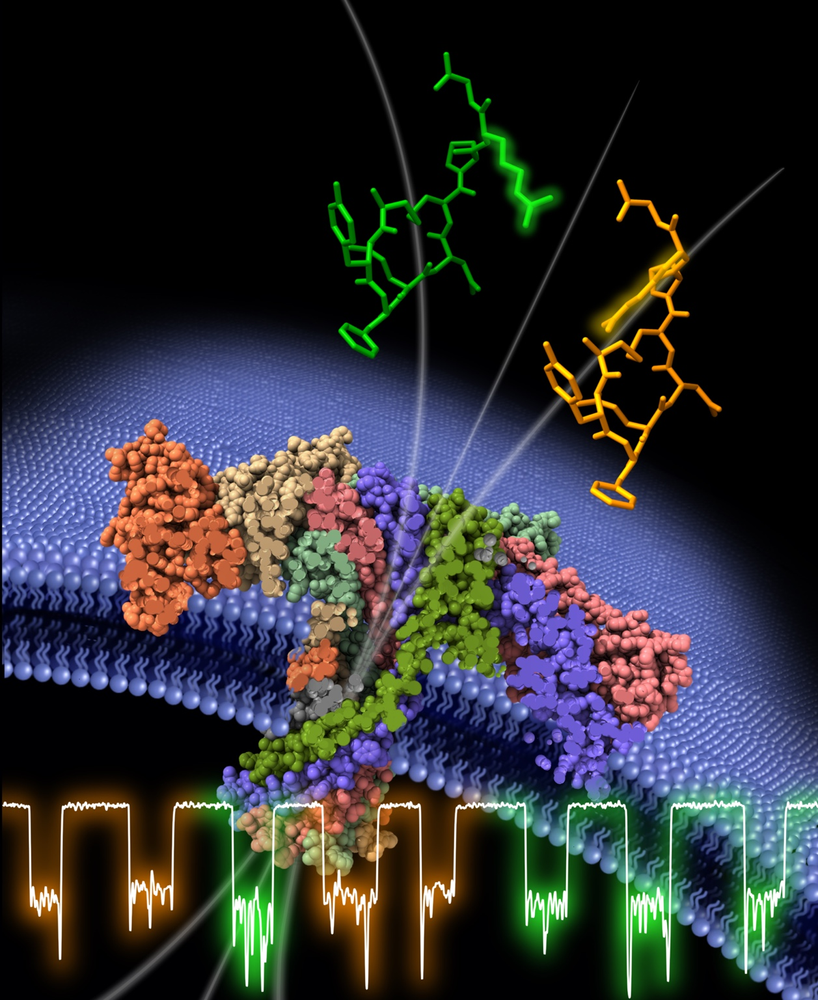
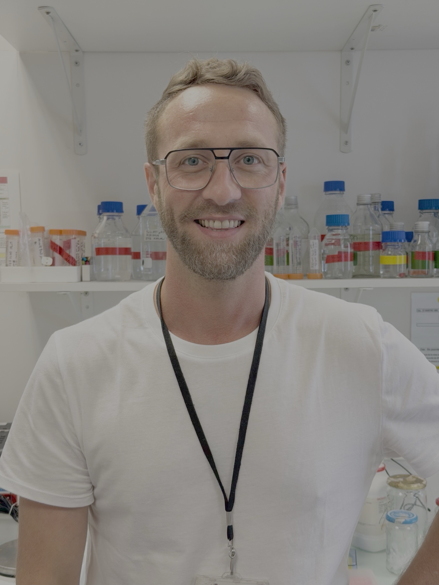
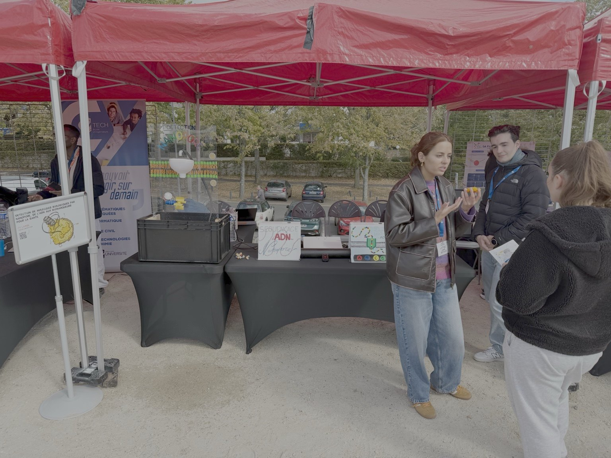
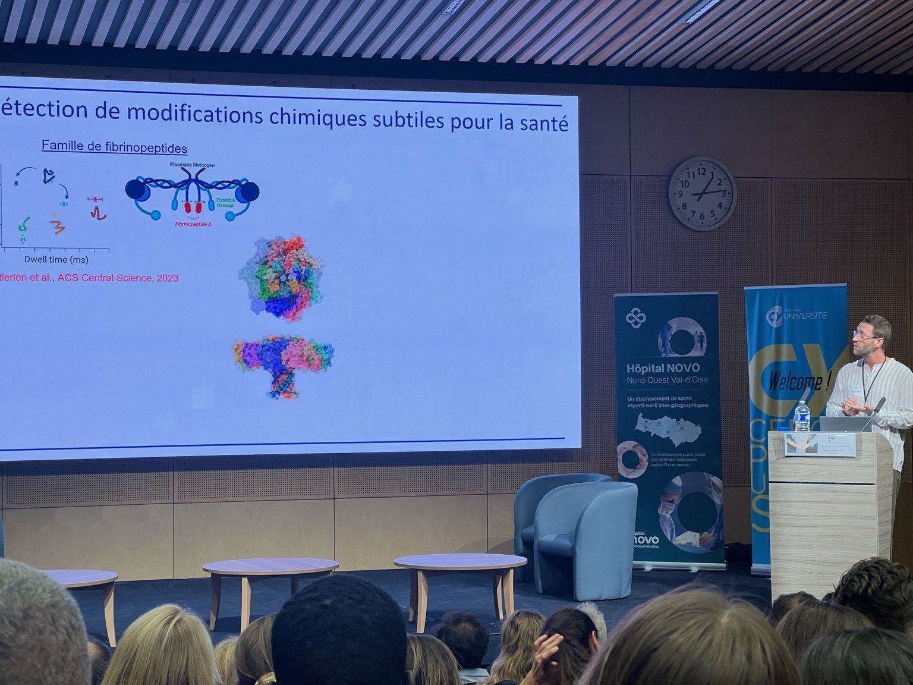
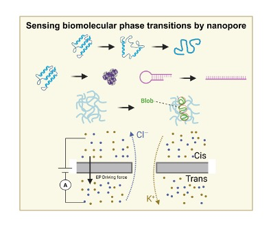
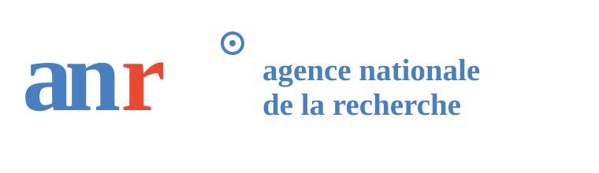
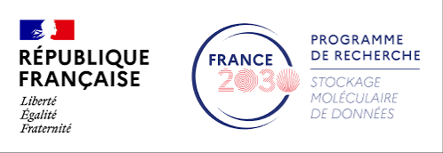
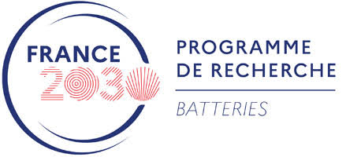
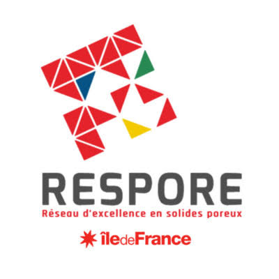
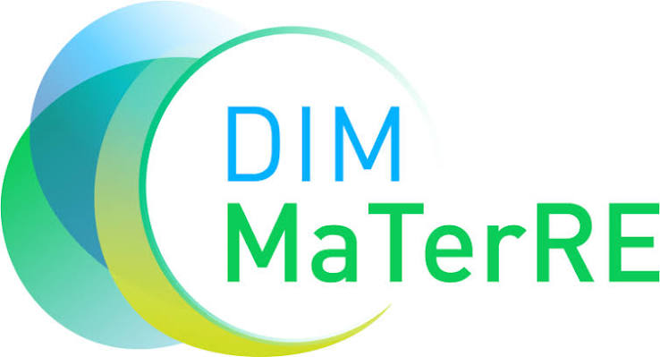

Nanopores biologiques
Modifier l’aérolysine par mutagenèse dirigée pour décoder protéines, peptides et information moléculaire.
Maître de conférences en biochimie et biologie moléculaire · HDR
Je développe des nanopores biologiques et artificiels pour détecter et identifier des protéines et des biomarqueurs peptidiques, caractériser leurs conformations et leurs modifications post-traductionnelles, et discriminer des variants isomériques à l’échelle de la molécule unique. J’étudie également la lecture de polymères numériques définis en séquence comme supports d’information moléculaire.


Au LAMBE, je développe des approches par nanopore permettant de relier la structure moléculaire aux signatures électriques, avec des applications allant des biomarqueurs peptidiques et protéiques aux polymères informationnels et aux espèces réactives des batteries.
Voir mon parcours académique →Modifier l’aérolysine par mutagenèse dirigée pour décoder protéines, peptides et information moléculaire.
Physique du transport et détection dans des milieux biologiques complexes.
Détection à l’échelle de la molécule unique de biomarqueurs peptidiques d’intérêt clinique.
Polymères numériques et chimie des batteries lithium–soufre.



Retrouvez la conférence de Benjamin Cressiot à l’Université Ouverte de CY Cergy Paris Université ; la vidéo intégrale est disponible sur la page Actualités.




